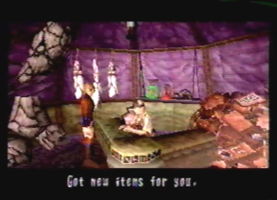

Biacah's Shop Item List  |
|
Item /Price 1. Elixir Minor/ 150 Dynes 2. Elixir Medis/300 Dynes 3. Berserk Micro/ 480 Dynes 4. Berserk Minor/960 Dynes 5. Revive/100 Dynes 6. Antidote/100 Dynes 7. Restore Speed/100 Dynes 8. Free Action /100 Dynes 9. Anesthetic/100 Dynes 10. Unbind/100 Dynes 11. Blast Chip/450 Dynes 12. Flash Chip /300 Dynes Gun Parts/Price 1. Mauler/ 3,000 Dynes 2. High Vulcan/5000 Dynes 3. Berserk Leech/9000 Dynes 4. Sniper/12000 Dynes
|